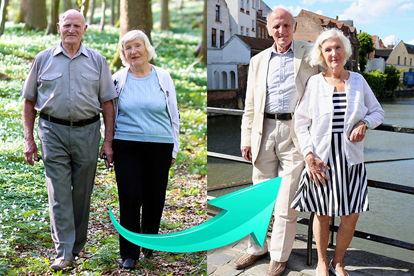
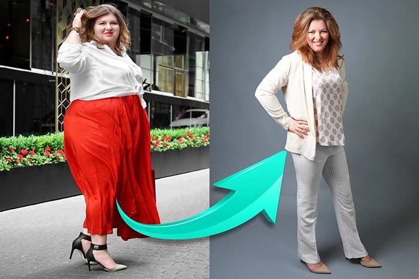
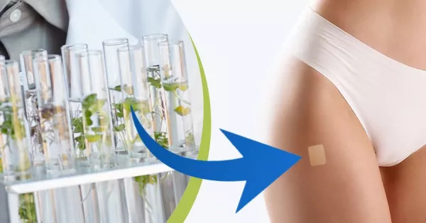
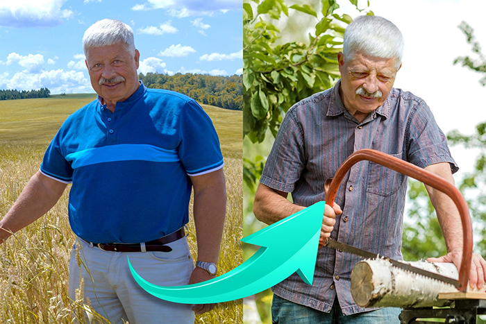
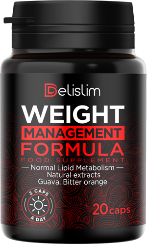

Χάστε το περιττό βάρος λίπους και παρατείνετε τη ζωή σας!
Επίδραση της αυτόματης απώλειας βάρους έως και 10 kg σε 2 εβδομάδες
Καλημέρα, τα ονόματά μας είναι Anna Wasilewska (Πολωνία), Ντιέγκο Χοσέ Γκουτιέρες (Αργεντινή) και Keiichira Sanaka (Ιαπωνία).
Οι επιστήμονες παγκόσμιας κλάσης μας αποκαλούν "νεαρούς ήρωες που εφηύραν το αντίδοτο για το υπερβολικό βάρος". Μας κολακεύει πολύ αυτό. Αλλά περισσότερο από την κολακεία, χαιρόμαστε που χάρη σε εμάς μπορείτε να χάσετε όλο το περιττό σωματικό λίπος. Και ταυτόχρονα να είστε υγιείς και ευτυχισμένοι.
Το "αντίδοτο απώλειας βάρους" μας θα σας βοηθήσει να χάσετε έως και 10 κιλά σε 2 εβδομάδες. Αυτό που είναι σημαντικό: η απώλεια βάρους γίνεται χωρίς αλλαγή της διατροφής και χωρίς σωματική δραστηριότητα. Έτσι, θα χάσετε βάρος έως και 10, 30, 50 κιλά και περισσότερο. Ακριβώς όπως η κα Jolanta από την Πιόνκι, η οποία, χάρη στη μέθοδό μας, έχασε έως και 100 κιλά!
Βρήκα μια νέα ζωή.
Ήμουν τόσο παχύσαρκη που δεν έβγαινα καν από το σπίτι γιατί ντρεπόμουν. Τα παιδιά στην αυλή με φώναζαν "ελέφαντα". Και οι μητέρες δεν τους έδιναν καν σημασία, απλώς με κοιτούσαν με αηδία. Φοβόμουν ότι θα πέθαινα μόνη μου και θα δημιουργούσα πρόβλημα στα παιδιά γιατί θα έπρεπε να βγάλουν το πτώμα μου από το παράθυρο με γερανό. Ε αυτή τη σκέψη κοιμόμουν κάθε βράδυ ...
Και τι γίνεται σήμερα;
Ζυγίζω 71 κιλά. Είμαι πιο ευτυχισμένος από ποτέ στη ζωή μου. Και το πιο σημαντικό: υγιής! Δεν περνάω πλέον όλο το χρόνο μου στο σπίτι. Περνάω χρόνο με την οικογένεια και τους φίλους μου. Και τα καλύτερα νέα είναι ότι ο πρώην σύζυγός μου άρχισε να μου τηλεφωνεί. Θέλει να επιστρέψει κοντά μου. Δεν ξέρω αν πρέπει να συμφωνήσω με αυτό, γιατί συναντώ νεότερους και πιο όμορφους άνδρες. Είναι απίστευτο...
Σοφία Μεταξά, 55 ετών, Αλίαρτος
Έχασε 102 κιλά σε 5 μήνες!
❮
❯
Σήμερα, μπορείτε κι εσείς να χάσετε αποτελεσματικά βάρος κατά 10, 30, 50 κιλά ή και περισσότερο και να ζήσετε έτσι μια υγιή και ευτυχισμένη ζωή.
Δεν έχει σημασία αν είστε γυναίκα ή άνδρας. Δεν έχει σημασία πόσο ετών είστε. Δεν έχει σημασία αν είστε υπέρβαροι από την παιδική ηλικία ή αν εμφανίσατε κατά τη διάρκεια αρκετών μηνών. Δεν έχει σημασία ποιος είναι ο λόγος - είτε πρόκειται για αδυναμία στα γλυκά, είτε για καθιστική εργασία, εγκυμοσύνη, ορμονικά προβλήματα, εμμηνόπαυση, φάρμακα κ.λπ. Αυτό που έχει σημασία είναι ότι θέλετε να χάσετε βάρος.
Αυτό είναι το μόνο που έχει σημασία. Αυτό είναι το μόνο που έχει σημασία. Και να ξέρετε ότι με το εργαλείο μας θα το πετύχετε γρήγορα, εύκολα και με ασφάλεια. Ό,τι κι αν γίνει.
• Αν ζυγίζετε τώρα 100 κιλά...
Σε 4 εβδομάδες θα ζυγίζετε 80 κιλά και σε 8 εβδομάδες θα ζυγίζετε 60 κιλά! Μπορείτε να χάσετε έως και 10 κιλά σε 2 εβδομάδες. Η αποτελεσματικότητα επιβεβαιώνεται από την εμπειρία 27 χιλιάδων γυναικών και ανδρών ηλικίας 18-98 ετών.
• Αν φοβάστε για την υγεία σας...
...επειδή έχετε κακά αποτελέσματα χοληστερόλης και σακχάρου, οι αρθρώσεις σας πονάνε, δεν έχετε ενέργεια και φοβάστε ότι το υπερβολικό βάρος θα μειώσει τη ζωή σας... - σε μόλις 2 εβδομάδες μπορείτε να βελτιώσετε την υγεία σας. Θα αρχίσετε να αναβλύζετε από ενέργεια. Και μετά από 4 εβδομάδες, τίποτα δεν θα σας πονάει πια. Δεν θα φοβάστε πλέον για την υγεία και τη ζωή σας, γιατί χάρη σε μια λεπτή και υγιή φιγούρα, δεν θα έχετε πλέον κανένα λόγο να το κάνετε.
• Αν αγαπάτε το καλό φαγητό και δεν μπορείτε να ακολουθήσετε μια δίαιτα...
Δεν χρειάζεται να το κάνετε καθόλου αυτό! Δεν υπάρχει ανάγκη γι' αυτό Μπορείτε να τρώτε ό,τι θέλετε, επειδή το φαγητό συχνά δεν επηρεάζει τα αποτελέσματα της απώλειας βάρους. Μπορείτε να χάσετε βάρος χωρίς να εγκαταλείψετε τα αγαπημένα σας φαγητά. Πώς; Θα σας πούμε παρακάτω.
• Αν δεν σας αρέσουν τα σπορ...
Μην το κάνεις! Το σώμα σας είναι τώρα φορτωμένο με υπερβολικά κιλά. Ασχοληθείτε με τη σωματική δραστηριότητα μόνο όταν αυτή δεν θα είναι πολύ επιβαρυντική για τις αρθρώσεις και την καρδιά σας. Αν έχετε όρεξη για άσκηση, κάντε την μόνο μετά από 2 ή 4 εβδομάδες, όταν θα είστε αδύνατοι. Τότε θα νιώσετε και μεγαλύτερη ευχαρίστηση από αυτό.
• Αν οι άνθρωποι γελούν με τα υπέρβαρά σας...
Αφήστε τους να γελάσουν. Μην σπαταλάτε τον πολύτιμο χρόνο σας ανησυχώντας γι' αυτό. Εφόσον είναι αρκετά κακοί ώστε να σας κρίνουν από την εμφάνισή σας, δεν αξίζουν καθόλου την προσοχή σας. Και σε λίγες εβδομάδες θα έχετε ένα λεπτό, ελκυστικό και, πάνω απ' όλα, υγιές σώμα που όλοι θα ζηλεύουν!
• Εάν έχετε συμπλέγματα λόγω παχυσαρκίας...
...γιατί γίνεται όλο και πιο δύσκολο να βρείτε την κατάλληλη γκαρνταρόμπα ή φοβάστε ότι ο σύντροφός σας δεν σας αγαπάει πια - δώστε στον εαυτό σας λιγότερο από ένα μήνα. Επιτέλους, μπορείτε να φορέσετε ρούχα που είναι μερικά νούμερα μικρότερα και σας ταιριάζουν απόλυτα. Ο σύντροφός σας θα σταματήσει να ψάχνει για πιο αδύνατους ανθρώπους και θα σας ερωτευτεί ξανά. Και εσείς θα αισθάνεστε υπέροχα με το λεπτό σας σώμα και θα χαίρεστε να κοιτάζεστε στον καθρέφτη.
Και όλα...
ΈΛΛΕΙΨΗ ΔΙΑΤΡΟΦΉΣ Ή ΣΩΜΑΤΙΚΉΣ ΆΣΚΗΣΗΣ
ΤΑ ΧΡΉΜΑΤΑ ΔΕΝ ΠΆΝΕ ΧΑΜΈΝΑ
ΔΕΝ ΥΠΆΡΧΟΥΝ ΑΛΛΑΓΈΣ ΣΤΟΝ ΤΡΌΠΟ ΖΩΉΣ
Σούπερ φιγούρα μετά την εγκυμοσύνη και παρά την αγάπη για τα γλυκά!
Σας ευχαριστώ, σας ευχαριστώ, σας ευχαριστώ για αυτή τη μέθοδο απώλειας βάρους! Ήθελα οπωσδήποτε να χάσω βάρος μετά την εγκυμοσύνη. Ήμουν πολύ αδύνατη και μετά... Είναι γνωστό ότι όταν μια γυναίκα μένει έγκυος, δεν αρνείται στον εαυτό της το νόστιμο φαγητό. Δεν χρειάζεται να παρακολουθείτε τι, πόσο και σε ποια ώρα τρώτε. "Είναι όλα για παιδί". Τόσο καλή δικαιολογία. Μετά τη γέννηση του Σεμπάστιαν μου, ήμουν ήδη πολύ υπέρβαρη. Δεν μπορούσα να το ξεφορτωθώ με νηστεία, ή τρέξιμο κάθε μέρα, ή τσάγια που καίνε το λίπος. Πίστευα ήδη ότι για το υπόλοιπο της ζωής μου θα πάλευα με μια μεγάλη και κρεμασμένη κοιλιά, μέχρι που έπεσα πάνω σε ένα άρθρο για αυτή τη μέθοδο απώλειας βάρους στην πύλη για μαμάδες. Ήξερα αμέσως ότι αυτό θα μου ταίριαζε!
Και έτσι συνέβη! Επειδή δεν πρόσεχα τι έτρωγα και δεν γυμναζόμουν - και έχασα μέχρι και 45 κιλά! Είμαι εκατό φορές πιο ενεργητικός. Τελειώνω τις δουλειές του σπιτιού τόσο γρήγορα που έχω ακόμα χρόνο να οδηγήσω 10 χιλιόμετρα για να συναντήσω τους φίλους μου πριν επιστρέψει ο σύζυγός μου από τη δουλειά. Και όταν πηγαίνω στην παιδική χαρά με τον γιο μου, είμαι ευτυχισμένη μέσα μου! Επειδή είμαι τόσο αδύνατη όσο ήμουν πριν αποκτήσω μωρό, σε αντίθεση με τις χοντρές μαμάδες στην παιδική χαρά. Μπορεί να φαίνομαι λίγο κακιά, αλλά μου αρέσει αυτό το υπέροχο συναίσθημα όταν με κοιτάζουν με ζήλια.
Ανθήλη Ελευθεριάδη, 28 ετών, Κάρπαθος
Έχασε 45 κιλά σε 8 εβδομάδες!
❮
❯
Πώς εφεύραμε την αυτόματη μέθοδο απώλειας βάρους μας;
Κάναμε την επαναστατική μας ανακάλυψη κατά τη διάρκεια μιας πρακτικής άσκησης στο Επιστημονικό Εργαστήριο της Σιγκαπούρης, στο οποίο προσκλήθηκαν 10 ιδιοφυΐες από όλο τον κόσμο. Παραδεχόμαστε αδιάκριτα ότι είμαστε μία από αυτές τις 10 ιδιοφυΐες.
Μας βοήθησε η αγάπη για την επιστήμη, μια νέα ματιά στο πρόβλημα των υπέρβαρων και ένα μεγάλο πείσμα στην πράξη. Δουλέψαμε μέρα με τη μέρα επί 17 μήνες. Από την κούραση, διακινδυνεύσαμε την υγεία μας. Αλλά αυτό δεν είναι τίποτα, γιατί δημιουργήσαμε ένα θαύμα που η επιστήμη δεν μπορούσε ή δεν ήθελε να κάνει επί 45 ετών .
Δεν θα μπορούσαμε πλέον να βλέπουμε τους ανθρώπους να υποφέρουν από το υπερβολικό βάρος.
Γιατί αποφασίσαμε να εφεύρουμε ένα αντίδοτο για το υπερβολικό βάρος; Για να σπάσουμε αυτό το ντόμινο θανάτου! Οι άνθρωποι παίρνουν βάρος με ανησυχητικό ρυθμό και, λόγω του υπερβολικού βάρους, αρρωσταίνουν σοβαρά. Και δεν φταίνε καθόλου οι ίδιοι...
Φταίει το μολυσμένο περιβάλλον στο οποίο ζούμε. Φταίνε τα ιδιαίτερα επεξεργασμένα προϊόντα. Φταίνε τα ορμονικά προβλήματα. Επίσης φταίει το άγχος. Ενοχές από τη ζωή στο τρέξιμο. Φταίει η καθιστική εργασία. Αυτό είναι συνέπεια της εγκυμοσύνης ή της εμμηνόπαυσης. Υπάρχουν πολλοί παράγοντες, αλλά αυτό δεν είναι το σημαντικό τώρα. Είναι σημαντικό και σκληρά λυπηρό το πώς οι παχύσαρκοι άνθρωποι συμπεριφέρονται στους άλλους...
Για πρώτη φορά στη ζωή μου, είμαι λεπτή.
Ήμουν δώδεκα ετών όταν άρχισα να παίρνω περιττά κιλά. Είχα πάντα καλή όρεξη, προς μεγάλη ικανοποίηση της γιαγιάς μου, η οποία με μεγάλωσε και με τάιζε με λιπαρά φαγητά. Μόνο στο σπίτι με θεωρούσαν όμορφο, αλλά στο σχολείο οι άνθρωποι με αποκαλούσαν χοντρό. Σε όλη μου τη ζωή με πείραζαν για το βάρος μου. Και δεν είχα την ευκαιρία να το διορθώσω. Ήταν αρκετό για να τρέξω στο λεωφορείο και ήμουν ήδη μούσκεμα στον ιδρώτα και η καρδιά μου χτυπούσε μανιωδώς. Οι άνθρωποι δεν καταλάβαιναν πόσο υπέφερα και με κορόιδευαν. Με μια λέξη, η ζωή ήταν ανυπόφορη.
Δόξα τω Θεώ που ένας συνάδελφος μου συνέστησε αυτό το εργαλείο (ο πατέρας του το χρησιμοποιούσε πολύ και το επαινούσε). Το δοκίμασα και έχασα βάρος κυριολεκτικά στα μάτια. Κάθε φορά που ξυπνάω το πρωί, δεν πιστεύω ότι ο λεπτός τύπος στον καθρέφτη είμαι εγώ. Επιτέλους άρχισα να τολμώ περισσότερο με τα κορίτσια. Βγαίνω με την Κάσια εδώ και 2 μήνες. Ελπίζω να βγει κάτι σοβαρό από αυτό. Και το πιο σημαντικό, όταν επισκέπτομαι τη γιαγιά μου, δεν την κάνω να αισθάνεται άβολα και δεν αρνούμαι το φαγητό. Γιατί ξέρω ότι χάρη σε αυτό το μέτρο, δεν θα πάρω βάρος!
Δημήτριος Γεννηματάς, 35 ετών, Κέρκυρα
Έχασε 61 κιλά σε 3 μήνες!
❮
❯
Δεν θα επιτρέψουμε να αποκαλούνται οι υπέρβαροι άνθρωποι τεμπέληδες λαίμαργοι.
Η γιαγιά της Άνια αρρώστησε από διαβήτη λόγω παχυσαρκίας και έφυγε πρόωρα από αυτόν τον κόσμο...
"Ήταν η γιαγιά μου τεμπέλα;" Έφαγε πολύ; Ήταν αντιαισθητική; Ήταν άσχημη; Απολύτως όχι! Ήταν μια όμορφη γυναίκα επειδή είχε μια ευγενική και στοργική καρδιά. Αυτή δεν υπήρξε ποτέ τεμπέλα. Είτε δούλευε στον κήπο, είτε μαγείρευε γεύματα για όλη την οικογένεια, είτε φρόντιζε παιδιά με ειδικές ανάγκες για φιλανθρωπικούς σκοπούς. Ήταν λοιπόν πολύ δραστήρια σωματικά! Και αυτή δεν έτρωγε ποτέ πάρα πολύ", λέει η Άνια, "έχασε βάρος και έτρωγε μόνο 3 μήλα την ημέρα! Δεν δούλεψε…
Ο πατέρας του Ντιέγκο πέθανε από καρδιακή προσβολή που προκλήθηκε από την παχυσαρκία...
"Ο πατέρας μου εργαζόταν σε εργοστάσιο. Κουβαλούσε βάρος όλη την ώρα. Κάθε εργάσιμη ημέρα του ήταν σαν μια έντονη προπόνηση στο γυμναστήριο. Παρόλα αυτά, πήρε 30 κιλά περιττό βάρος. Πήγε ακόμη και σε διατροφολόγους, αλλά δεν τον βοήθησαν. Θα έδινα πολλά για να είχα εφεύρει νωρίτερα αυτό το αντίδοτο για τα περιττά κιλά. Ο μπαμπάς θα ήταν σήμερα μαζί μας", παραδέχεται με θλίψη ο Ντιέγκο.
Ο Κεϊτσίροέχει κληρονομική παχυσαρκία...
– "Όλη η οικογένειά μου πηγαίνει σε διατροφολόγους, ενδοκρινολόγους, γυμναστές εδώ και χρόνια. Και για χρόνια δεν έδιναν αποτελέσματα, εντελώς. Τι θα γινόταν αν η μαμά μαγείρευε ΠΑΝΤΑ διαιτητικά γεύματα: ρύζι, μαγειρευτά και άπαχο κρέας; Και έτσι κάθε πίσω, σαν να καταβροχθίζει κάθε μέρα 10 χάμπουργκερ με πατάτες τηγανιτές! Γι' αυτό αποφάσισα να το ανακαλύψω και να κάνω κάτι γι' αυτό ο ίδιος, προκειμένου να σώσω τις ζωές των αγαπημένων μου προσώπων", λέει ο Κεϊτσίρο.
Είστε υπέροχες και αξίζετε σεβασμό ανεξάρτητα από το βάρος σας.
Εξάλλου, σε όλο τον κόσμο τα άτομα με εμφανές υπερβολικό βάρος υφίστανται εκφοβισμό. Δεν συμφωνούμε με αυτό! Συνήθως μάλιστα συμβαίνει ότι οι υπέρβαροι άνθρωποι είναι καλύτεροι από τους αδύνατους ανθρώπους. Επειδή ξέρουν πώς είναι να είσαι απόβλητος ή να σε κοροϊδεύουν. Ως εκ τούτου, έχουν περισσότερη ζεστασιά και κατανόηση. Είναι οι καλύτεροι φίλοι.
90, 120, 150, 180 κιλά; Αυτοί οι ηλίθιοι αριθμοί στη ζυγαριά δεν είστε εσείς! Ο αληθινός εαυτός σας βρίσκεται εκεί μέσα, αλλά είναι κρυμμένος κάτω από ένα στρώμα θανατηφόρου λίπους...
Και πρέπει να απαλλαγείτε από αυτό το στρώμα λίπους όχι για να ευχαριστήσετε τους άλλους, αλλά για να διατηρήσετε την υγεία σας και ίσως ακόμη και τη ζωή σας. Είναι γεγονός ότι το υπερβολικό βάρος συντομεύει τη ζωή κατά μέσο όρο κατά 12 χρόνια. Αλλά δεν χρειάζεται να τελειώνει τόσο λυπηρά. ΔΕΝ ΜΠΟΡΕΙ να είναι έτσι!

Μεγάλη υγεία στα γηρατειά!
Ο σύζυγός μου και εγώ ήμασταν πάνω από 30 κιλά υπέρβαροι και αισθανόμασταν άσχημα εξαιτίας αυτού. Στα γηρατειά, είναι όλο και πιο δύσκολο να αντέξει κανείς το υπερβολικό βάρος. Έπεσα στις αρθρώσεις μου (γόνατα και ισχία) και είχα πάρα πολύ σάκχαρο στο αίμα μου και ο Zdzisik έπαθε αθηροσκλήρωση. Κάθε μέρα γκρίνιαζε ότι θα πάθαινε καρδιακή προσβολή. Ο ειδικός μας είπε να χάσουμε βάρος, μόνο αυτό μπορεί να μας βοηθήσει. Το TrocWe προσπάθησε να περιοριστεί στο φαγητό, αλλά αυτό δεν τον βοήθησε πολύ. Η εγγονή μας Μόνικα, μόλις το άκουσε αυτό, άρχισε αμέσως να ψάχνει στο Διαδίκτυο για να βρει κάτι για να χάσει βάρος και βρήκε αυτόν τον τρόπο.
Τι θαύματα ήταν αυτά! Και λειτούργησε με τον ίδιο τρόπο για μένα και τον Zdzic. Κιλάκι-κιλάκι, χάσαμε βάρος τόσο γρήγορα και εύκολα που δεν μπορούσαμε να το πιστέψουμε. Έπρεπε να αλλάξω όλα μου τα ρούχα σε μικρότερο μέγεθος! Αλλά αυτό είναι καλό, γιατί τώρα είμαστε αδύνατοι και γεμάτοι ενέργεια, όπως στα νιάτα μας. Ο ειδικός δεν μπορούσε να εκφράσει τον θαυμασμό του και είπε ειλικρινά ότι είναι περήφανος για τέτοιους ασθενείς.
Αγλαΐα и Ανέστης Τσιώλης, 72 и 75 ετών, Κύθνος
Έχασαν 21 και 26 κιλά σε 5 εβδομάδες!
❮
❯
Μας γελούσαν όταν αρχίσαμε τη δουλειά μας ...
Άλλες "νεαρές ιδιοφυΐες" που προσκλήθηκαν στο Επιστημονικό Εργαστήριο της Σιγκαπούρης αποφάσισαν να εργαστούν για την επίλυση των προβλημάτων του διαβήτη, της αθηροσκλήρωσης ή του εκφυλισμού των αρθρώσεων και της σπονδυλικής στήλης. Όταν το ακούσαμε αυτό, σφίξαμε τα δόντια μας από θυμό.
Εξάλλου, όλες αυτές οι παθήσεις προκαλούνται από το υπερβολικό βάρος! Εξάλλου, είναι απλό και λογικό ότι πρέπει να ασχοληθούμε με τις αιτίες και όχι με τις συνέπειες! Οι άνθρωποι πρέπει να απολαμβάνουν την υγεία μέσω του σωστού βάρους και όχι να μπουκώνουν τον εαυτό τους με χημειοπαθήσεις που προκαλούνται από το υπερβολικό βάρος.
Αποφασίσαμε να κάνουμε τα πάντα για να βρούμε ένα αντίδοτο για το υπερβολικό βάρος. Δουλέψαμε σκληρά από μέρα σε μέρα. Μας επέπληξαν επειδή καθόμασταν στο εργαστήριο τη νύχτα - όταν η είσοδος του εργαστηρίου ήταν κλειστή. Η έρευνά μας, ωστόσο, πήγαινε προς μια τόσο καλή κατεύθυνση που δεν μπορούσαμε να κοιμηθούμε τα βράδια από τον ενθουσιασμό μας. Έπρεπε να συνεχίσουμε να δουλεύουμε!
Η 17μηνη έρευνά μας έφερε επανάσταση στην προσέγγιση της απώλειας βάρους και των υπέρβαρων. Ανακαλύψαμε μια σειρά από σχέσεις στη λειτουργία του ανθρώπινου μεταβολισμού που κανένας επιστήμονας δεν είχε συναντήσει ποτέ πριν. Όταν ξεκινήσαμε τη μελέτη, υποθέσαμε ότι...
Ακόμα και ένας άνδρας 200 κιλών είναι λεπτός εσωτερικά
Αν κάνετε μια ακτινογραφία του σώματός σας, θα δείτε μια φυσιολογική, λεπτή φιγούρα στην ιατρική οθόνη. Μπορείτε εύκολα να ελέγξετε αν είστε υπέρβαροι πιέζοντας περισσότερο το στομάχι, τα χέρια ή τα πόδια σας. Αυτή η σταθερή αντίσταση που θα νιώσετε είναι το περιττό λίπος.
Στο λεπτό σας σώμα, μεταφέρετε βαρύ και περιττό λιπώδη ιστό. Ανάλογα με την κλίμακα του περιττού βάρους, το πάχος του κυμαίνεται από μερικά έως μερικές δεκάδες εκατοστά. Το βάρος του κυμαίνεται από αρκετές έως αρκετές δεκάδες κιλά. Τα καλά νέα είναι ότι μέσα σας έχετε ένα ελκυστικό σώμα με τέλεια σιλουέτα. Είναι κρυμμένο μόνο κάτω από τη λιπώδη μεμβράνη. Το μόνο πράγμα που πρέπει να κάνεις είναι να βγάλεις αυτό το παλτό. Ξέρουμε πώς να το κάνουμε!
Ανομοιόμορφη αναλογία λίπους προς λίπος
Το στρώμα λίπους είναι πολύ ετερογενές. Ας ρίξουμε μια πιο προσεκτική ματιά σε αυτό. Αυτή η φωτογραφία δείχνει ότι η λιπώδης μεμβράνη αποτελείται από 3 στρώματα.
1.
Υποδόριος λιπώδης ιστός
Αυτό είναι το εξωτερικό στρώμα, ακριβώς κάτω από το δέρμα, και αποτελείται κατά 57% από νερό. Εδώ σχηματίζεται η κυτταρίτιδα και το πλαδαρό, ζελατινώδες δέρμα.
2.
Υποδόριο λίπος
Αυτό είναι το μεσαίο στρώμα, παρόμοιο με το βούτυρο ή το λαρδί. Πάντα ζυγίζει περισσότερο και αποθηκεύει τις τοξίνες που προκαλούν στρες, κόπωση και δερματικά προβλήματα.
3.
Σπλαχνικό λίπος - και αυτός είναι ο πραγματικός σας εχθρός, ο οποίος πρέπει να νικηθεί!
Αυτό είναι το εσωτερικό στρώμα. Πρόκειται για το λεπτότερο αλλά πιο ανθεκτικό στρώμα, όπως ακριβώς και η σταθερή σόλα του παπουτσιού. Είναι πολύ δύσκολο να απαλλαγείτε από αυτό. Μέσω αυτού δημιουργείται το φαινόμενο yo-yo. Πώς συμβαίνει αυτό; Ακόμα και αν καταφέρουμε να χάσουμε βάρος, το απολίθωμα "θέλει" να καλυφθεί με στρώματα λίπους και το κάνει γρήγορα.
Στη μελέτη μας σε 9.000 παχύσαρκους ανθρώπους, δείξαμε ξεκάθαρα ότι οι μέχρι τώρα γνωστές μέθοδοι απώλειας βάρους λειτουργούν μόνο στο δεύτερο στρώμα της λιπώδους μεμβράνης, δηλαδή στη λιπώδη μάζα. Μια τέτοια προσέγγιση είναι καταδικασμένη σε αποτυχία.
Ο πραγματικός λόγος για το φαινόμενο yo-yo
Χάνοντας βάρος μέσω της διατροφής και της άσκησης, καίτε μερικά κιλά κολλώδους υποπρωτεϊνικού λίπους, ενώ το σπλαχνικό απολιθωμένο λίπος παραμένει άθικτο. Μόλις τελειώσετε με την απώλεια βάρους, το σπλαχνικό λίπος θα πάρει εκδίκηση από μόνο του! Διεγείρει την ανάπτυξη των υποζύμων του λίπους. Εξ ου και το φαινόμενο yo-yo, το οποίο καταστρέφει όλες τις προσπάθειες και σας κάνει να παίρνετε βάρος ακόμα πιο γρήγορα από ό,τι χρειάστηκε για να χάσετε βάρος.
Ξεπέρασα τα κόμπλεξ και βρήκα την αγάπη.
Έχω χάσει βάρος ακριβώς 17 φορές στη ζωή μου. Δοκίμασα τη νηστεία - χωρίς αποτέλεσμα. Δίαιτα λάχανου, δίαιτα Dukan, δίαιτα καθαρισμού, κετογονική δίαιτα. Δοκίμασα τα πάντα - χωρίς αποτέλεσμα. Ήμουν αναστατωμένη επειδή τα συμπλέγματά μου κατέστρεψαν όλες τις σχέσεις μου. Ζήλευα τους συντρόφους μου, γκρίνιαζα για την εμφάνισή μου ... Στη ζωή μου δεν θα πίστευα ότι μετά από τόσα χρόνια βασανιστηρίων θα έχανα βάρος. Λοιπόν, ήταν ένα σοκ!
Τα ψώνια για ρούχα δεν είναι πλέον η ενόχλησή μου, επειδή το μέγεθος S ή M μου είναι παντού!!! Δεν ντρέπομαι για τον τρόπο που με κοιτάζουν οι άνθρωποι στις διακοπές. Αλλαγή 180 μοιρών, πραγματικά. Και νιώθω 100% γυναίκα, ολοκληρωμένη και άξια της προσοχής ενός άντρα. Δεν φοβάμαι ότι θα με προδώσει κάποια αδύνατη γκόμενα. Επειδή είμαι μια αδύνατη γκόμενα! Και ο σημερινός μου άντρας μου έκανε πρόσφατα πρόταση γάμου. Λατρεύω τη ζωή μου!
Αγγελική Βικελίδη, 41 ετών, Σέρρες
Έχασε 38 κιλά σε 7 εβδομάδες!
❮
❯
Σπάστε ένα παχύ απολίθωμα με μια σκληρή γροθιά και μην ανησυχείτε ΠΟΤΕ ξανά για το υπερβολικό βάρος.
Το στερεό σπλαχνικό λίπος είναι ο πραγματικός σας εχθρός. Αν δεν απαλλαγείτε από αυτό, τότε δεν θα απαλλαγείτε ποτέ από το περιττό βάρος. Με τη μέθοδό μας, μπορείτε να απαλλαγείτε από αυτόν τον τύπο λίπους. Έχουμε αποδείξει την ύπαρξή του, το έχουμε ερευνήσει και έχουμε βρει έναν τρόπο για να απαλλαγείτε από αυτό. Πως δουλεύει?
1.
Γρήγορη και αυτόματη καύση λίπους
Σπάζοντας το στερεό στρώμα λίπους, η λιπώδης μάζα κυριολεκτικά "χάνει το έδαφος κάτω από τα πόδια σας". Δεν υπάρχει τίποτα για να προσκολληθεί, οπότε καίγεται. Ως αποτέλεσμα, το επίπεδο του υποδόριου λίπους εξαφανίζεται επίσης πολύ γρήγορα - απαλλαγείτε από την κυτταρίτιδα μετά από μόλις 7 ημέρες χρήσης της θεραπείας.
2.
Καθαρισμός του σώματος από τις τοξίνες
Τη στιγμή της ενεργοποίησης του μηχανισμού με τον οποίο το σώμα έχει επαρκή δύναμη για να διασπάσει το λίπος, το σώμα καθαρίζεται από τις τοξίνες που έχουν συσσωρευτεί σε αυτό. Χάρη σε αυτό, κοιμάστε καλύτερα, έχετε περισσότερη δύναμη και αισιοδοξία. Το δέρμα, τα μαλλιά και τα νύχια σας θα αναγεννηθούν και θα γίνουν πιο υγιή. Θα δείχνετε υγιείς και ελκυστικοί.
3.
Προστασία από το φαινόμενο Yo-yo
Και το πιο σημαντικό: η διάσπαση του σπλαχνικού λίπους προστατεύει από το φαινόμενο yo-yo. Και αυτό σημαίνει ότι μόλις χάσετε βάρος, δεν θα ξαναπάρτε ποτέ βάρος. Μελέτες έχουν δείξει ξεκάθαρα ότι ως αποτέλεσμα της διάσπασης του εσωτερικού λίπους, το σώμα επανεκκινεί τη μνήμη σε κυτταρικό επίπεδο. Απλώς ξεχνάει πώς να εναποθέτει στρώματα λίπους στην κοιλιά, τους μηρούς, τους γλουτούς και σε όλο το σώμα του. Και ο μεταβολισμός σας αυξάνει τον κύκλο εργασιών, οπότε μπορείτε να τρώτε ό,τι θέλετε, αλλά δεν παίρνετε βάρος. Πανέξυπνο, έτσι δεν είναι;
ΠΡΙΝ
ΑΦΟΎ
Ένα σώμα γεμάτο λίπος, δηλητηριασμένο από τοξίνες, χωρίς ενέργεια.
Το σώμα είναι άπαχο, απαλλαγμένο από τοξίνες, γεμάτο ενέργεια και υγιές.
Το σώμα σας είναι ήδη αθλητικό
Έχετε κουραστεί από το καθημερινό μαρτύριο της εργασίας σε τρεις βάρδιες στο κατάστημα. Αναγκάζεστε να κουβαλάτε αυτά τα επιπλέον κιλά κάθε μέρα. Είναι σαν να παίρνεις 2 πακέτα νερό και να τα φοράς όλη μέρα. Και δεν μπορείς καν να τα βάλεις στο έδαφος. Κανένας αθλητής δεν μπορεί να φορέσει όσα φορούν καθημερινά οι υπέρβαροι άνθρωποι. Για όλα αυτά τα χρόνια!
Η μέθοδός μας λειτουργεί μόνο με λίπος. Συγκεκριμένα, καίει μόνο το λίπος χωρίς να καίει τους μυς. Είναι πολύ σημαντικό. Έτσι, απλά εκθέτετε το ήδη αθλητικό σας σώμα. Αποκτάτε όχι μόνο μια ελκυστική φιγούρα, αλλά και μυϊκή γλυπτική, φυσική κατάσταση και δύναμη.
Δεν χρειάζεται να ιδρώνετε στο γυμναστήριο. Έχετε ήδη ένα υγιές σώμα μέσα σας. Αρκεί να αφαιρέσετε το κέλυφος του περιττού λίπους. Η μέθοδός μας σας επιτρέπει να αφαιρέσετε το κέλυφος του λίπους τόσο εύκολα και γρήγορα όσο βγάζετε το μπουρνούζι σας.

Γρήγορα και υπέροχα!
Όλη αυτή η απώλεια βάρους ήταν σαν ένα χτύπημα των δακτύλων! Και να ξέρετε ότι με το εργαλείο μας θα το πετύχετε γρήγορα, εύκολα και με ασφάλεια. Όταν επέστρεψα στη δουλειά στο γραφείο 2 εβδομάδες αργότερα, τα σαγόνια όλων έπεσαν από την εντύπωση. Το αφεντικό με πήρε μάλιστα σε συνέντευξη και, σοβαρά ανήσυχος, με ρώτησε αν είχα κάποια σοβαρή ασθένεια που έχασα βάρος τόσο γρήγορα. Ανέπνευσε με ανακούφιση όταν του μίλησα για αυτό το προϊόν και για το πόσο υπέροχα αισθάνομαι! Μου έδωσε συγχαρητήρια και ζήτησε κάψουλες για την κόρη του που παίρνει βάρος με στεροειδή. Αυτές οι κάψουλες βοήθησαν και την κόρη του αφεντικού (έχασε βάρος στο επιθυμητό βάρος), και τώρα έχω καλή σχέση μαζί του!
Σπυριδούλα Κοτζιά, 37 ετών, Πύργος
Έχασε 22 κιλά σε 4 εβδομάδες!
❮
❯
Φυτά που καταστρέφουν τα λιπαρά απολιθώματα με ένα χτύπημα
Το πραγματικό αντίδοτο στην παχυσαρκία είναι διαθέσιμο στα χέρια σας εδώ και εκατοντάδες χρόνια, στα φυτά. Αυτά τα φυτά αναπτύσσονταν ειρηνικά στη Γη και απλά περίμεναν κάποιον να τα προσέξει επιτέλους. Το μόνο που έπρεπε να γίνει ήταν να τα βάλουμε μαζί και να τα αφήσουμε να δουλέψουν. Χρειάστηκε μόνο μια προσπάθεια για να απαλλαγούμε από το περιττό βάρος ...
Ξεκινώντας, επιλέξαμε περισσότερα από 100 φυτά και τα εξετάσαμε προσεκτικά. Κατά τη διάρκεια της έρευνας, επιλέξαμε αρκετά από τα πιο αποτελεσματικά εκχυλίσματα. Κάθε εκχύλισμα παρήγαγε αποτελέσματα παρόμοια με την άσκηση και τη δίαιτα. Δεν ήταν αρκετό.
Η δράση αυτών των επιμέρους στοιχείων μπορεί να συγκριθεί με το έργο ενός ανθρακωρύχου που διατάχθηκε να σκάψει ο ίδιος μια σήραγγα σε ένα μεγάλο βουνό. Θα τα κατάφερνε, αλλά θα του έπαιρνε μια ολόκληρη ζωή. Για να διαπεράσετε το βουνό, χρειάζεστε ένα τεράστιο τρυπάνι που μπορεί να αντιμετωπίσει το έργο σε λίγες ημέρες.
Το δικό μας μεσαίο είναι ένα τέτοιο τεράστιο τρυπάνι που ξεφορτώνεται γρήγορα τα περιττά κιλά.

Η αποτελεσματικότητα έγκειται στο συνδυασμό εκχυλισμάτων από μοναδικά φυτά από διαφορετικές ηπείρους. Τα συστατικά λειτουργούν με συνδυασμένη ισχύ 100 φορές περισσότερο. Στην περίπτωση του στερεού λίπους, αυτός ο συνδυασμός αποτελεί έκπληξη. Δεν αμύνεται καν, απλά υποχωρεί και απελευθερώνει το σώμα από το περιττό βάρος!
Δράση στη ρίζα του προβλήματος
Μια άλλη σημαντική απόφαση ήταν η μορφή του προϊόντος μας κατά της παχυσαρκίας. Άσκηση, δίαιτα, λοσιόν καύσης λίπους ή διαδερμικά επιθέματα - όλα αυτά επηρεάζουν μόνο τη σύσφιξη και το υποδόριο λίπος. Δηλαδή, αυτό που μπορεί να εξαφανιστεί γρήγορα, αλλά επιστρέφει ακόμα πιο γρήγορα και με ορμή.
Γι' αυτό καταλήξαμε σε φυσικές κάψουλες που λειτουργούν στην πηγή του προβλήματος.
Βοηθούν στη διάσπαση του σπλαχνικού λίπους με μεγάλη αποτελεσματικότητα, εξαπλώνοντας τη δράση τους σε όλο το σώμα.
"Ιστορική ανακάλυψη στην επιστήμη"
Έτσι αποκαλούν οι παγκοσμίου φήμης επιστήμονες τη νέα μας μέθοδο απώλειας βάρους. Γιατί;
Σας επιτρέπει να χάσετε βάρος έως και 10 κιλά σε 2 εβδομάδες - χρησιμοποιώντας τη μέθοδό μας, μπορείτε να χάσετε βάρος 12 φορές πιο γρήγορα από ό, τι με τη δρακόντεια δίαιτα σε συνδυασμό με καθημερινές προπονήσεις.
Είναι φυσικό και ασφαλές - περιέχει μόνο φυσικά συστατικά που είναι σκληρά για το σπλαχνικό λίπος, αλλά ήπια για το πεπτικό σύστημα. Δεν επηρεάζει άλλα φάρμακα που λαμβάνονται και δεν προκαλεί αλλεργίες.
Δεν απαιτεί αλλαγή στη διατροφή - απαγορεύεται μάλιστα! Η δίαιτα επιβραδύνει το μεταβολισμό, κάτι που δεν ενδείκνυται κατά τη διάρκεια της απώλειας βάρους. Το προϊόν μας για αδυνάτισμα λειτουργεί πιο έξυπνα για να σας βοηθήσει να καταστρέψετε τον εχθρό της καλλίγραμμης σιλουέτας σας - το σπλαχνικό λίπος.
Δεν απαιτεί σωματική προσπάθεια - κατά τη διάρκεια του μαθήματος μπορείτε να παίξετε αθλήματα, αλλά όχι απαραίτητα. Η απώλεια βάρους συμβαίνει ανεξάρτητα από τη σωματική δραστηριότητα. Μπορείτε να περάσετε χρόνο στον καναπέ βλέποντας τηλεόραση και να έχετε εγγυημένα αποτελέσματα.
Δεν χρειάζεται να πληρώσετε πολλά γι' αυτό - τα χιλιάδες δολάρια που ξοδεύετε για διατροφολόγο, γυμναστήριο, τσάγια και συμπληρώματα απώλειας βάρους μένουν στην τσέπη σας.
Και το πιο σημαντικό: βασίζεται στις τελευταίες επιστημονικές ανακαλύψεις, οι οποίες αναγνωρίζονται από τους καλύτερους επιστήμονες σε όλο τον κόσμο.
Αποδοτικότητα πάντα και σε οποιεσδήποτε συνθήκες
Ακολουθούν γραφήματα που δείχνουν τα αποτελέσματα που πήραμε, καθώς και αποτελέσματα από πολλά ερευνητικά κέντρα στην Ιαπωνία, τις ΗΠΑ, τον Καναδά, τη Νότια Κορέα και την Αργεντινή. Τα αποτελέσματα που παρουσιάζονται περιλαμβάνουν συνολικά 27.000 γυναίκες και άνδρες ηλικίας 18-98 ετών.
Μέση απώλεια βάρους σε 2 εβδομάδες ανάλογα με την ηλικία:
10,8 κιλά
18-29 ετών
10,1 κιλά
30-39 ετών
10,5 κιλά
40-49 ετών
10,5 κιλά
50-59 ετών
10,9 κιλά
60-69 ετών
10,8 κιλά
70-98 ετών
Τα αποτελέσματα που προέκυψαν αποδεικνύουν σαφώς ότι το αποτέλεσμα εμφανίζεται ανεξάρτητα από την ηλικία, με τα καλύτερα αποτελέσματα να επιτυγχάνονται από άτομα ηλικίας 40-59 ετών.
Μέση απώλεια βάρους σε 2 εβδομάδες λόγω άσκησης:
10,1 κιλά
Καθιστική εργασία
(γραφείο)
10,4 κιλά
Εργαστείτε όρθιοι
(κατάστημα, εστιατόριο)
10,7 κιλά
Σωματική εργασία
(κατασκευές, ταχυμεταφορές)
Τα αποτελέσματα που προέκυψαν αποδεικνύουν σαφώς ότι το αποτέλεσμα εμφανίζεται ανεξάρτητα από τον βαθμό σωματικής δραστηριότητας που σχετίζεται με το επάγγελμα.
Μέση απώλεια βάρους 2 εβδομάδων ανά φύλο:
10,8 κιλά
Γυναίκες
ηλικίας 18 έως 98 ετών
10,2 κιλά
Άνδρες
ηλικίας 18 έως 98 ετών
Τα αποτελέσματα δείχνουν σαφώς ότι το αποτέλεσμα εμφανίζεται ανεξάρτητα από το φύλο. Οι γυναίκες χάνουν βάρος λίγο πιο γρήγορα από τους άνδρες.

Τρώω ό,τι θέλω και η κοιλιά μου έχει φύγει!
Έχω ήδη εμπιστευτεί πολλές φορές διάφορες ανακοινώσεις και συστάσεις από φίλους. Επομένως, και σε αυτή την περίπτωση ήμουν σταθερά στο ΟΧΙ. Αλλά οι κόρες μου με ακολούθησαν και μου είπαν να πάρω αυτές τις κάψουλες γιατί δεν θέλω να φάω σαλάτες.
Αυτό άρχισα να παίρνω για να είμαι ήρεμος. Η σύνθεσή του είναι φυσική, οπότε διαπίστωσα ότι δεν θα μου έκανε κακό και η τιμή ήταν προσιτή. Και, ευτυχώς, διαπίστωσα ότι αυτή τη φορά έκανα μεγάλο λάθος. Το στομάχι μου αισθάνθηκε καλύτερα μέσα σε μια εβδομάδα, κυριολεκτικά. Πρέπει επίσης να ομολογήσω ότι αισθάνομαι πολύ καλύτερα. Με τα εγγόνια του, κλωτσάει ακόμη και την μπάλα χωρίς να λαχανιάζει. Αλλά εγώ τρώω με τον δικό μου τρόπο. Πολύ ωραία.
Βασίλειος Γκόφας, 66 ετών, Αλεξανδρούπολη
Έχασε 17 κιλά σε 3,5 εβδομάδες!
❮
❯
Δείτε πόσο εύκολο είναι.
Δεν χρειάζεται να τρώτε μόνο μήλα, καρότα και μαρούλια για αρκετούς μήνες. Δεν χρειάζεται να κουράζεστε στο γυμναστήριο. Δεν χρειάζεται καν να βγείτε από το σπίτι. Μπορείτε να τρώτε ό,τι θέλετε. Δεν χρειάζεται να κινείστε πολύ. Δεν χρειάζεται να αλλάξετε τίποτα στην καθημερινότητά σας. Ο τρόπος για να αρχίσετε να χάνετε βάρος έως και 10 κιλά σε 2 εβδομάδες είναι πολύ απλός. Πώς λειτουργεί η διαδικασία απώλειας βάρους;
Πάρτε 1 κάψουλα 2 φορές την ημέρα 30 λεπτά πριν από τα γεύματα. Ορίστε. Η πρώτη κάψουλα πριν το πρωινό και η δεύτερη πριν το δείπνο. Και αυτό είναι όλο. Δεν ανησυχείς για τίποτα. Ζείτε τη ζωή σας όπως πριν και το σώμα σας μετατρέπεται σε μηχανή καύσης θερμίδων. Διαλύει το σκληρό στρώμα λίπους για να αποκαλύψει τελικά τη λεπτή και ελκυστική φιγούρα που έχετε μέσα σας!
Δείτε πόσο ασφαλές είναι.
Δεν κινδυνεύετε από υποσιτισμό ή αδυναμία - όπως συμβαίνει με μια δίαιτα. Δεν κινδυνεύετε από τραυματισμό των αρθρώσεων ή αρρυθμία - όπως συμβαίνει με την προπόνηση. Δεν θα αντιμετωπίσετε καμία παρενέργεια. Γιατί;
Το προϊόν είναι 100% φυσικό. Η χρήση του δεν επηρεάζει κανένα από τα φάρμακα που λαμβάνονται, δεν ερεθίζει το πεπτικό σύστημα και δεν προκαλεί αλλεργίες. Όλα αυτά χάρη στη μορφή φυσικών καψουλών.
Η σύνθεσή τους έχει σχεδιαστεί έτσι ώστε να είναι εντελώς μη επεμβατική για το σώμα. Ακριβώς όπως το νερό είναι μη επεμβατικό για το σώμα.
Κάποιοι μας αποκαλούν ήρωες, ενώ άλλοι ... "απατεώνες".
Ναι... Και αυτό μόνο και μόνο επειδή έχουμε ήδη απολύσει 27.000 ανθρώπους χωρίς να βγάλουμε χρήματα από το άνοιγμά μας. Μαζί δηλώσαμε ότι σε μια εποχή που η μάστιγα της παχυσαρκίας αφαιρεί εκατομμύρια ζωές, δεν θα πληρωθούμε για να πουλήσουμε το αυτόματο προϊόν απώλειας βάρους μας. Αποφασίσαμε να το διαθέσουμε στους ανθρώπους χωρίς να βγάλουμε χρήματα από αυτό. Εδώ και έξι μήνες, 27 χιλιάδες άνθρωποι το έχουν ήδη χρησιμοποιήσει, γεγονός για το οποίο είμαστε πολύ χαρούμενοι.
Αλλά στις 20/04/2022, πρέπει να πουλήσουμε την πατέντα για αυτό το μέτρο, προκειμένου να εξασφαλίσουμε οικονομικούς πόρους για περαιτέρω επιστημονική έρευνα. Σκοπεύουμε να εφεύρουμε άλλες μεθόδους για την καταπολέμηση πολλών άλλων ασθενειών και καταστάσεων, συμπεριλαμβανομένου του εκφυλισμού των αρθρώσεων και της σπονδυλικής στήλης και της άνοιας. Ωστόσο, τέτοιες μελέτες είναι πολύ, πολύ ακριβές - και πρέπει να συγκεντρώσουμε κεφάλαια για αυτό.
Δυστυχώς, η πώληση του διπλώματος ευρεσιτεχνίας θα έκανε το προϊόν τουλάχιστον 10 φορές πιο ακριβό από ό,τι είναι σήμερα. Γι' αυτό θέλουμε όλοι όσοι έχουν ανάγκη να λάβουν βοήθεια πριν από την πώληση του διπλώματος ευρεσιτεχνίας. Γι' αυτό σας προτρέπουμε θερμά να δράσετε ΤΩΡΑ!
Δεν ρισκάρεις τίποτα!
Το προϊόν μας, το οποίο μπορείτε να πάρετε στο σπίτι, ονομάζεται . Λαμβάνοντας αυτή την απόφαση, δεν διακινδυνεύετε τίποτα.
Παίρνοντας αυτή την απόφαση, δεν διακινδυνεύετε τίποτα. Αυτό συμβαίνει επειδή προστατεύεστε από την Τριπλή Εγγύηση Ικανοποίησης, η οποία αποτελείται από: Εγγύηση πρωτοτυπίας, Εγγύηση ποιότητας και Εγγύηση αποτελεσματικότητας.
Πρωτότυπο προϊόν με πιστοποιητικό - μπορείτε να είστε σίγουροι ότι θα λάβετε ένα πρωτότυπο προϊόν, διαθέσιμο μόνο μέσω αυτού του ιστότοπου.
Η ποιότητα επιβεβαιώνεται από την έρευνα - χάρη στην προηγμένη μέθοδο παραγωγής, το προϊόν πληροί τα υψηλότερα πρότυπα ποιότητας. Όλα τα συστατικά έχουν αποδειχθεί 100% ασφαλή για την υγεία.
Η αποτελεσματικότητα επιβεβαιώθηκε από 27.000 χρήστες - πολυάριθμες μελέτες και καταναλωτές επιβεβαιώνουν επίσης την υψηλότερη αποτελεσματικότητα του προϊόντος.
Η ζωή είναι πολύ όμορφη για να τη συντομεύσετε με το να είστε υπέρβαροι ή να βασανίζεστε με συμπλέγματα ...
Δεν χρειάζεται να υποφέρετε πια. Απαλλαγείτε από το λίπος και προστατέψτε την υγεία σας. Δεν διακινδυνεύετε τίποτα. Δεν έχετε απολύτως τίποτα να χάσετε. Το μόνο πράγμα που μπορείτε να χάσετε είναι 20 κιλά, 50 κιλά ή ακόμα και 100 κιλά επιπλέον βάρους. Ωστόσο, αποκτάτε μια ελκυστική φιγούρα, πολλή θετική ενέργεια και εξαιρετική υγεία.
Τώρα έχετε 1 απλή επιλογή:
1.
Μην αναλάβετε καμία δράση...
Συνεχίστε να υποφέρετε από το λιπαρό κέλυφος που αναπτύσσεται στο σώμα σας, βασανίστε τον εαυτό σας με κόμπλεξ και θέστε την υγεία σας σε κίνδυνο...
2.
Εκμεταλλευτείτε την ευκαιρία που σας δίνεται ΤΩΡΑ!
Κάψτε το μισητό λίπος και ρίξτε το κέλυφος του λίπους. Εύκολα! Εύκολα! Το μόνο που χρειάζεται να κάνετε είναι να συμπληρώσετε την παρακάτω φόρμα σε 2 λεπτά και... σε λίγες μόνο μέρες θα αρχίσετε να χάνετε βάρος.
Εκπληρώστε το όνειρό σας για ένα λεπτό και υγιές σώμα!
Σας ευχαριστούμε πολύ που διαβάσατε το μήνυμά μας. Εάν χρησιμοποιήσετε το εργαλείο μας, μετά από μερικές εβδομάδες, όντας ένα λεπτό και υγιές άτομο, θα θυμάστε αυτή τη μέρα με ένα χαμόγελο και θα σκεφτείτε: "Ήταν μια μέρα που άλλαξε τη ζωή μου..."
Σας ευχόμαστε καλή υγεία και ευτυχία!
Άννα, Ντιέγκο και ο Κεϊτσίρο
Αποκτήστε μια αυτόματη διαδικασία για την απώλεια βάρους για να συμμετάσχετε στο εκπτωτικό κλαμπ για φθηνότερα

Αριθμός λοιπών μερών με συγχρηματοδότηση: 060
Χάρη στη διαδικασία , θέλω να χορέψω από χαρά! Ποτέ δεν αισθάνθηκα τόσο καλά, ακόμη και όταν ήμουν νέος. Είμαι πολύ ευγνώμων.
Ἀγαθή,
Αθήνα
Λόγω του προβλήματός μου, ένιωθα απαίσια. Οι αναποτελεσματικές θεραπείες σέρνονταν για χρόνια. Μέχρι που μια μέρα η γυναίκα μου μου έδωσε το . Εν ολίγοις, ποτέ δεν ένιωσα καλύτερα!
Κωνσταντίνος,
Θεσσαλονίκη
Αν ήξερα ότι ήταν τόσο εύκολο, θα το είχα χρησιμοποιήσει εδώ και πολύ καιρό. Cyk - και μετά από το πρόβλημα! Το συνιστώ σε όλους εκείνους που έχουν χάσει προ πολλού την ελπίδα ότι κάτι θα τους βοηθήσει.
Ἁγνή,
Ηράκλειο
Απλά πρέπει να κάνετε αυτή τη θεραπεία! Έχω παλέψει με το πρόβλημα πριν με παρόμοια φάρμακα και το δεν είναι μόνο απολύτως ασφαλές για την υγεία, αλλά λειτουργεί επίσης καλύτερα από όλα αυτά μαζί.
Νικόλαος,
Λάρισα
Έλαβα το ως δώρο από τη γιαγιά μου και στην αρχή δεν πίστευα ότι θα μπορούσε να είναι τόσο αποτελεσματικό. Αλλά τι κακό μου έκανε να δοκιμάσω; Και μετά από 28 ημέρες έπρεπε να δείτε το πρόσωπό μου, πώς τα προβλήματά μου άρχισαν να εξαφανίζονται. Ένα πολύ ευχάριστο πράγμα.
Κύρα,
Θεσσαλονίκη
Χάρη στη διαδικασία , θέλω να χορέψω από χαρά! Ποτέ δεν αισθάνθηκα τόσο καλά, ακόμη και όταν ήμουν νέος. Είμαι πολύ ευγνώμων.
Μαῖα,
Βόλος
Αποδοτικότητα + ταχύτητα + ασφάλεια. Λατρεύω αυτόν τον συνδυασμό! Σούπερ λύση καθώς κάποιος ψάχνει για μια αποδεδειγμένη και εξαιρετικά αποτελεσματική μέθοδο.